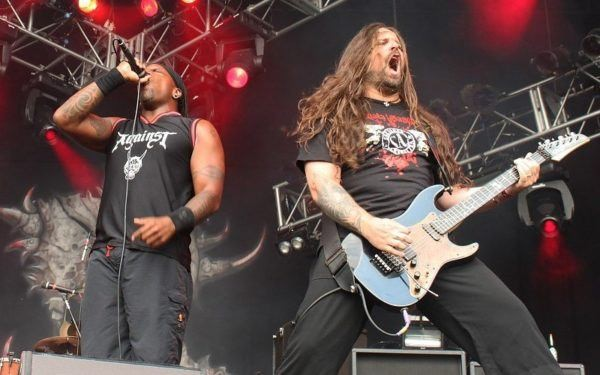

Los 80's
Cada vez es más tendencia la moda retro, vestir con prendas que se utilizaban en décadas pasadas. Alguien dijo una vez que la moda es como un gran saco que llenar y una vez lleno, se da la vuelta y se empieza a sacar de nuevo. Al margen de que sea un fenómeno cíclico lo que sí es cierto es que cuando pensamos en cómo nos vestíamos en los ’80, se nos dibuja una sonrisa en la cara. Vamos a ver en este artículo qué hizo que la moda de los años ochenta inundara las calles con color, tachuelas, geometrías, hombreras, cardados, etc, en pocas palabras, qué provocó que fuera la década de la transgresión. Conozcamos la moda de los ’80 y sus características.
CÓMO SE VESTÍAN EN LOS AÑOS 80
Los años ochenta supusieron una forma de pensar, de vestir, de cantar y de expresarse fuera de los convencionalismos, fue una época de rebeldía, la gente vestía como quería. Por la calle se podía ver desde el Punk más radical, pasando por los estilos Rockeros más duros y descarados, hasta el look Rockabilly, que marcó una vuelta a los años ’50.
Se trataba de eso, convivir con muchos estilos diferentes y todos y cada uno de ellos tenían espacio en la ciudad. Muchas veces la gente vestía conforme a su nivel de vida, condicionado por la clase social a la que pertenecía, pero existían ciertas prendas comunes a todos estos estilos.
Los «Pijos», término que ya entonces se refería a gente joven generalmente de posición social elevada que sigue la última moda y tiene unos modales y una forma de hablar afectados y muy característicos, solían vestir con ropa clásica, prendas neutras como eran los pantalones vaqueros, pitillos, camisetas, cazadoras y ese inconfundible suéter anudado al cuello.
Fundamentalmente la moda era una manera de expresión de la rebeldía social de aquellos jóvenes que mostraban su inconformismo a las convenciones agrupándose en lo que se llamó «Tribus Urbanas». Vamos a hacer un breve recorrido por estas y sus características y conocer como influyeron en la moda de los años ochenta.
TRIBUS URBANAS DE LOS AÑOS 80
Las tribus urbanas son grupos de jóvenes que visten de forma similar, con hábitos comunes y lugares de reunión y se comportan de acuerdo a la ideología que comparten. Estos individuos se reúnen por el simple placer de estar juntos y por buscar a sus semejantes, tenían formas de pensar y de actuar totalmente autónomos a los impuestos por la cultura de su entorno, creando ecosistemas de pensamientos independientes y paralelos a los del resto de la sociedad en general.
HEAVY
Estas tribus destacaban sobre todo por llevar prendas muy oscuras, el negro y el cuero son los principales protagonistas, looks con tachuelas, imperdibles, chapas, parches con imágenes de grupos de música, mallas ajustadas y por supuesto las cazadoras de cuero.

La vestimenta «Heavy» podría tomarse como una mezcla entre lo descuidado e irreverente del punk y la importancia del cuero y el negro de los rockers. Al igual que los punks, el rechazo a la autoridad se encuentra representada en lo que visten, en este caso su calzado pasa por botas militares. Los pantalones siempre pitillo y ajustados, negros o vaqueros, pantalones de mezclilla, cinturones anchos con remaches, botas, faldas negras o de cuero.

Los accesorios son unisex, muñequeras, gargantillas o cinturones de cuero con púas y tachuelas, también usan cadenas atadas a la cintura y ceñidores hechos a base de balas o cualquier otro toque de tintes bélicos.
Las camisetas preferiblemente negras, con los logos de las bandas más representativas del genero , entre los que destacaban Iron Maiden, Metallica, o Black Sabath.
Los accesorios con tachuelas, botas militares, chaquetas de cuero, se convirtieron en vestimenta típica de los metaleros al ser introducidas por el grupo Judas Priest.
PUNK
Después de la moda hippie, basada en lucir lo más natural y libre posible, sin maquillaje, pelo largo, poca lencería, los ’80 llegaron acompañados de una moda totalmente distinta, muy artificiosa y elaborada y visualmente contraria. El pelo rapado, teñido en colores llamativos, maquillaje oscuro y muy marcado y prendas que invitaban a la rebelión.
La moda Punk en Estados Unidos, era muy simple, unos jeans, camisetas y chaquetas de cuero que tanto utilizaban grupos como los Ramones, vestidos de segunda mano en contra de los excesos de la moda disco de los ’70.
Según fue evolucionando la moda punk, comenzaron a surgir las camisetas intencionada e universalmente ofensivas, crucifijos invertidos, símbolos nazis y del oscurantismo… que eran desgarradas a propósito.
Otros elementos de la estética punk incluían medias de red, bandas con picos y clavos, joyería de piel con remaches, broches de seguridad en ropa y en la piel, un fuerte delineador tanto en hombres como mujeres.
También vestían de cuero y jeans, con prendas rotas y deshilachadas, y a todo ellos añadían su nota de distinción, el pelo de punta, con peinados excéntricos y sumamente elaborados, en ocasiones, de varios colores.
ROCKERS
El rockabilly no es sólo un estilo musical, es algo más que una forma de ver la vida, es una actitud frente a ella.
El look de la mujer rockabilly, está inspirado en las pin up’s, mujeres de los años 40’s y 50’s que eran dibujadas o fotografiadas en actitudes sugerentes. Solían utilizar escotes tipo corazón, con hombros al descubiertos, ya que esto les proporcionaba una apariencia más voluptuosa.
Las faldas estrechas tipo tubo o pantalones tobilleros de talle alto, marcando el busto y creando el efecto óptico de una cintura más pequeña, modelando el trasero.
Los zapatos son uno de los complementos más importantes, pueden ser de todos los colores pero lo más importante es el tacón, altísimo, nunca es demasiado. El maquillaje es esencial, es uno de los elementos distintivos clave de este estilo. Predominan los labios rojo intenso, un polvo o base pálida, y delineador negro exagerado. Muy femenino y glamuroso.
Tanto hombres y como mujeres llevaban tupé y los hombres, además, uñas patillas interminables. Lucían botas y botines negros de puntera.